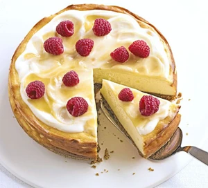

Cuts into 10 slices - Prep: 10 mins - Cook: 40 mins
Ingredients for Lemon Cheesecake
225g digestive biscuits
100g butter, melted
250g tub mascarpone
600g soft cheese
2 eggs, plus 2 yolks
zest 3 lemons, juice of 1
4 tbsp plain flour
175g caster sugar
For the Topping
½ a 284ml pot soured cream
3 tbsp lemon curd
handful raspberries, to serve (optional)
How to make lemon cheesecake?
Heat oven to 180C/fan 160C/gas 4. Line the bottom of a 23cm springform tin with greaseproof paper. Tip the biscuits and melted butter into a food processor, then blitz to make fine crumbs. Press into the tin and chill.
Whisk all the other ingredients in a large bowl until completely combined, pour into the tin, then bake for 35-40 mins until the cheesecake has a uniform wobble.
Turn off the oven and leave the cake inside until cool. When it is completely cooled, remove from the tin and top with soured cream. Swirl lemon curd over the top and decorate with raspberries, if you like.